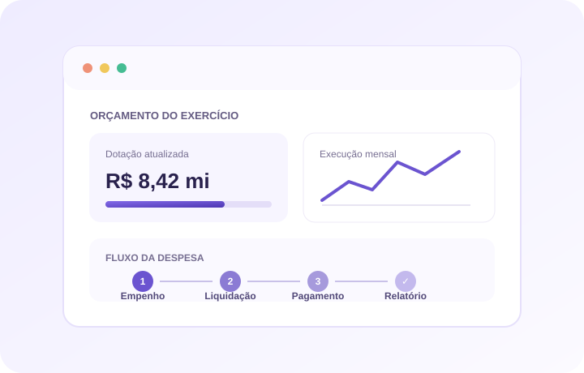

PPA
Cadastro e organização dos programas e ações do planejamento plurianual.
Planeje o orçamento e acompanhe sua execução contábil com módulos conectados às rotinas da administração municipal.

Módulos disponíveis para planejamento orçamentário e rotinas de execução contábil.
Cadastro e organização dos programas e ações do planejamento plurianual.
Estruturação das diretrizes orçamentárias e seus anexos.
Planejamento da lei orçamentária anual, receitas, despesas e dotações.
Rotinas de alterações orçamentárias e acompanhamento de créditos adicionais.
Registro e consulta de empenhos vinculados à execução da despesa.
Fluxos para liquidação da despesa e processamento de pagamentos.
Rotinas financeiras e movimentações bancárias relacionadas à execução.
Registro e consulta de operações extraorçamentárias.
Relatórios de planejamento e execução, com apoio aos demonstrativos e obrigações do setor público.
O Global CONT compartilha dados de folha, servidores e órgão com o Global RH por meio da API do sistema.
Converse com a equipe sobre planejamento e execução no seu município.